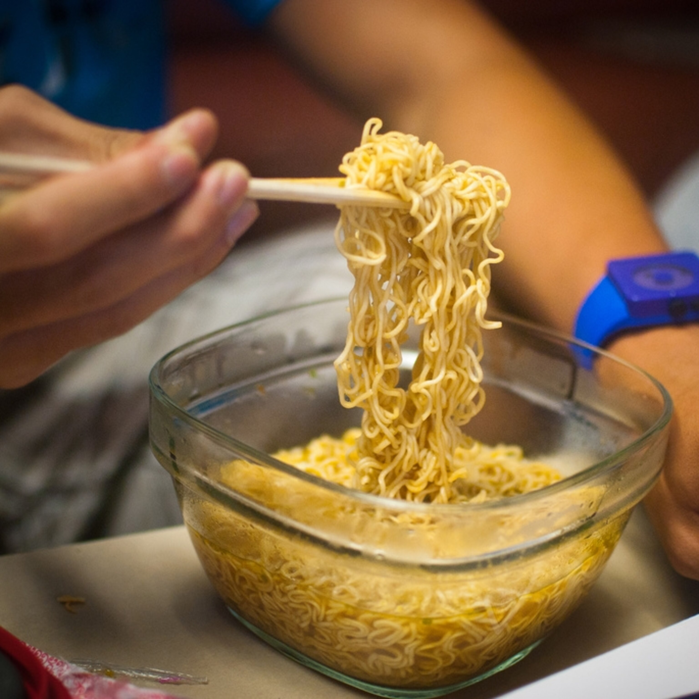

Instant ramen is the college staple. Modular, tasty, and more importantly: cheap.
Ingredients:
- One pack of Instant Ramen Noodles and Seasoning Packet
- A bowl
- Water (Optionally, chicken broth)
- Mircowave/Stove and Pan
- Addtional Seasonings of Choice
Steps:
- Fill bowl/pan with water (or broth if using), enough to fully submerge the ramen block.
- For stove + pan: heat water to boiling point prior to submerging ramen.
- For microwave: with ramen in water, place inside microwave for 8 minutes
- Check on ramen as it cooks to make sure it doesn't boil over, gently stir with fork to seperate noodles.
- Once done, strain the noodles from the water. Careful to not burn yourself.
- Place in eating container, add seasoning packet and stir to distribute. Add addiontal seasonings if desired.
- Serve and enjoy!